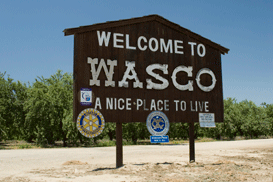
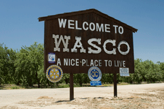
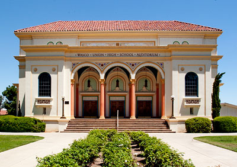

Where is Wasco California?
Wasco is a city in the San Joaquin Valley, in Kern County, California, United States. The small town run approximately 9.5 miles accross. Hwy 46 runs North of the town that will take you to Paso Robles, Ca.
Wasco is a city in the San Joaquin Valley, in Kern County, California, United States. The small town run approximately 9.5 miles accross. Hwy 46 runs North of the town that will take you to Paso Robles, Ca.
Wasco is best know for being the City of Roses, thousands of roses are grown every season by field workers. During other season there is so much work that is done, since its big on agriculture.
Since Wasco is a very small town, there is not much to do but support our local sports teams. Most of the town gets together at the high school football stadium. Our school has won multipule championships.
The Wasco Union High School Auditorium is on the National Register of Historic Places.It was built in 1929 when all the roads were made out of dirt. The auditorium was never finished, some people say that the man building it died in it.
